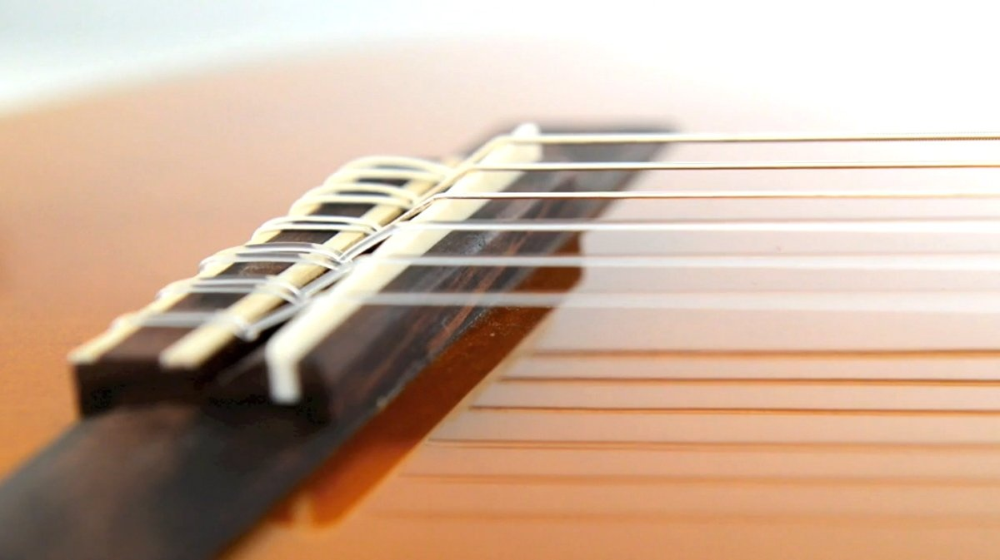

Chitara clasică are o serie de caracteristici:
-
Acesta este un instrument acustic. Sunetul este amplificat doar de corpul de lemn al chitarei.
-
Cele mai frecvente păduri pentru corpul unei chitare clasice sunt lemn de trandafir sau mahon pentru spate şi laterale, molid sau cedru pentru vârf. Gâtul poate fi realizat din cedru sau mahon.
-
Gâtul chitarei este mai larg, ceea ce, pe de o parte, face mai uşoară apăsarea notei dorite, dar, pe de altă parte, necesită mai mult efort atunci când cânţi (de exemplu, pentru o bară).
-
Corzile se joacă de obicei cu degetele. Adesea, chitaristii îşi folosesc şi unghiile pentru a obţine un sunet mai luminos.
-
Marcajele fretului de pe tastă sunt situate pe partea laterală a tastaturii, nu pe planul tastaturii. în primul rând, este mai potrivit cu designul strict al chitarei şi, în al doilea rând, nu este nevoie să tăiaţi puncte în faţa gâtului.

Gâtul chitarei este mai larg, ceea ce, pe de o parte, face mai uşoară apăsarea notei dorite, dar, pe de altă parte, necesită mai mult efort atunci când cânţi (de exemplu, pentru o bară).